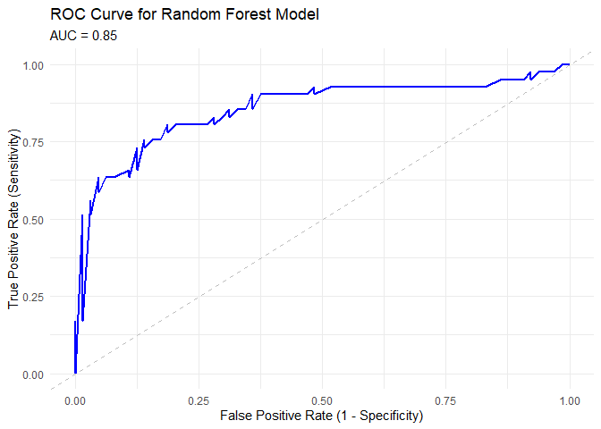

Modelling
Yixin Zheng (yz4993), Thomas Tang (tt3022), Yonghao YU (yy3564) 2024-11-16
Yixin Zheng (yz4993), Thomas Tang (tt3022), Yonghao YU (yy3564)
library(tidyverse)## ── Attaching core tidyverse packages ──────────────────────── tidyverse 2.0.0 ──
## ✔ dplyr 1.1.4 ✔ readr 2.1.5
## ✔ forcats 1.0.0 ✔ stringr 1.5.1
## ✔ ggplot2 3.5.1 ✔ tibble 3.2.1
## ✔ lubridate 1.9.3 ✔ tidyr 1.3.1
## ✔ purrr 1.0.2
## ── Conflicts ────────────────────────────────────────── tidyverse_conflicts() ──
## ✖ dplyr::filter() masks stats::filter()
## ✖ dplyr::lag() masks stats::lag()
## ℹ Use the conflicted package (<http://conflicted.r-lib.org/>) to force all conflicts to become errorslibrary(janitor)##
## 载入程序包：'janitor'
##
## The following objects are masked from 'package:stats':
##
## chisq.test, fisher.testInterpreting num (author: Yixin Zheng): The values for
num represent the degree of narrowing in the coronary
arteries: 0: No disease (< 50% diameter narrowing). 1-4: Increasing
severity of disease (> 50% diameter narrowing, with different
severities).
For convenience, this variable will binarized: 0: No heart disease (value 0 in num). 1: Presence of heart disease (values 1-4 in num).
*but if we want to analyze the severity of heart disease num will be treated as a categorical variable. example code: cleaned_data <- data |> mutate(num = factor(num, levels = c(0, 1, 2, 3, 4), labels = c(“No Disease”, “Mild”, “Moderate”, “Severe”, “Very Severe”)))
cleveland <- read_csv("./data/cleveland.csv", na = "?") |>
clean_names() |>
mutate(num = if_else(num == 0, 0, 1)) # Binarize the `num` variable: 0 = no heart disease, 1 = heart disease## Rows: 303 Columns: 14
## ── Column specification ────────────────────────────────────────────────────────
## Delimiter: ","
## dbl (14): age, sex, cp, trestbps, chol, fbs, restecg, thalach, exang, oldpea...
##
## ℹ Use `spec()` to retrieve the full column specification for this data.
## ℹ Specify the column types or set `show_col_types = FALSE` to quiet this message.# |> drop_na() Removes rows with any missing values (optional, adjust as needed)
hungary = read_csv("./data/hungarian.csv", na = "?") |>
clean_names() |>
mutate(num = if_else(num == 0, 0, 1))## Rows: 294 Columns: 14
## ── Column specification ────────────────────────────────────────────────────────
## Delimiter: ","
## dbl (14): age, sex, cp, trestbps, chol, fbs, restecg, thalach, exang, oldpea...
##
## ℹ Use `spec()` to retrieve the full column specification for this data.
## ℹ Specify the column types or set `show_col_types = FALSE` to quiet this message.# |> drop_na() Removes rows with any missing values (optional, adjust as needed)
long_beach = read_csv("./data/long_beach_va.csv", na = "?") |>
clean_names() |>
mutate(num = if_else(num == 0, 0, 1))## Rows: 200 Columns: 14
## ── Column specification ────────────────────────────────────────────────────────
## Delimiter: ","
## dbl (14): age, sex, cp, trestbps, chol, fbs, restecg, thalach, exang, oldpea...
##
## ℹ Use `spec()` to retrieve the full column specification for this data.
## ℹ Specify the column types or set `show_col_types = FALSE` to quiet this message.# |> drop_na() Removes rows with any missing values (optional, adjust as needed)
switzerland = read_csv("./data/switzerland.csv", na = "?") |>
clean_names() |>
mutate(num = if_else(num == 0, 0, 1))## Rows: 123 Columns: 14
## ── Column specification ────────────────────────────────────────────────────────
## Delimiter: ","
## dbl (14): age, sex, cp, trestbps, chol, fbs, restecg, thalach, exang, oldpea...
##
## ℹ Use `spec()` to retrieve the full column specification for this data.
## ℹ Specify the column types or set `show_col_types = FALSE` to quiet this message.# |> drop_na() Removes rows with any missing values (optional, adjust as needed) cor(cleveland$chol, cleveland$num, use = "complete.obs")## [1] 0.08516361Variable Selection (author: Yonghao YU)
author: Yonghao YU
Data Preprocessing
cleveland$region = "Cleveland"
hungary$region = "Hungarian"
long_beach$region = "Long_Beach_VA"
switzerland$region = "Switzerland"
combined_data_one = bind_rows(cleveland, hungary, long_beach, switzerland)
colnames(combined_data_one) = c("age", "sex", "cp", "trestbps", "chol", "fbs",
"restecg", "thalach", "exang", "oldpeak", "slope",
"ca", "thal", "num", "region")
combined_data_two = combined_data_one |>
mutate(region = case_when(
region == "Cleveland" ~ 1,
region == "Hungarian" ~ 2,
region == "Long_Beach_VA" ~ 3,
region == "Switzerland" ~ 4,
)) |>
select(-thal,-ca) |>
drop_na()
case_data = combined_data_two |>
filter(num == 1)
control_data = combined_data_two |>
filter(num == 0)
print(case_data)## # A tibble: 324 × 13
## age sex cp trestbps chol fbs restecg thalach exang oldpeak slope
## <dbl> <dbl> <dbl> <dbl> <dbl> <dbl> <dbl> <dbl> <dbl> <dbl> <dbl>
## 1 67 1 4 160 286 0 2 108 1 1.5 2
## 2 67 1 4 120 229 0 2 129 1 2.6 2
## 3 62 0 4 140 268 0 2 160 0 3.6 3
## 4 63 1 4 130 254 0 2 147 0 1.4 2
## 5 53 1 4 140 203 1 2 155 1 3.1 3
## 6 56 1 3 130 256 1 2 142 1 0.6 2
## 7 48 1 2 110 229 0 0 168 0 1 3
## 8 58 1 2 120 284 0 2 160 0 1.8 2
## 9 58 1 3 132 224 0 2 173 0 3.2 1
## 10 60 1 4 130 206 0 2 132 1 2.4 2
## # ℹ 314 more rows
## # ℹ 2 more variables: num <dbl>, region <dbl>print(control_data)## # A tibble: 207 × 13
## age sex cp trestbps chol fbs restecg thalach exang oldpeak slope
## <dbl> <dbl> <dbl> <dbl> <dbl> <dbl> <dbl> <dbl> <dbl> <dbl> <dbl>
## 1 63 1 1 145 233 1 2 150 0 2.3 3
## 2 37 1 3 130 250 0 0 187 0 3.5 3
## 3 41 0 2 130 204 0 2 172 0 1.4 1
## 4 56 1 2 120 236 0 0 178 0 0.8 1
## 5 57 0 4 120 354 0 0 163 1 0.6 1
## 6 57 1 4 140 192 0 0 148 0 0.4 2
## 7 56 0 2 140 294 0 2 153 0 1.3 2
## 8 44 1 2 120 263 0 0 173 0 0 1
## 9 52 1 3 172 199 1 0 162 0 0.5 1
## 10 57 1 3 150 168 0 0 174 0 1.6 1
## # ℹ 197 more rows
## # ℹ 2 more variables: num <dbl>, region <dbl>print(combined_data_two)## # A tibble: 531 × 13
## age sex cp trestbps chol fbs restecg thalach exang oldpeak slope
## <dbl> <dbl> <dbl> <dbl> <dbl> <dbl> <dbl> <dbl> <dbl> <dbl> <dbl>
## 1 63 1 1 145 233 1 2 150 0 2.3 3
## 2 67 1 4 160 286 0 2 108 1 1.5 2
## 3 67 1 4 120 229 0 2 129 1 2.6 2
## 4 37 1 3 130 250 0 0 187 0 3.5 3
## 5 41 0 2 130 204 0 2 172 0 1.4 1
## 6 56 1 2 120 236 0 0 178 0 0.8 1
## 7 62 0 4 140 268 0 2 160 0 3.6 3
## 8 57 0 4 120 354 0 0 163 1 0.6 1
## 9 63 1 4 130 254 0 2 147 0 1.4 2
## 10 53 1 4 140 203 1 2 155 1 3.1 3
## # ℹ 521 more rows
## # ℹ 2 more variables: num <dbl>, region <dbl>author: Yonghao YU
For Continues case
For continuous variables, we use mean and standard deviation (std) to describe the distribution in overall samples, samples of control(num = 0), and samples of case(num = 1). Then, we use t-test to examine whether the means of these variables are significantly different between case group and control group (significance level = 0.05).
# 1. Mean and Std for Continuous Variables (Overall)
list_conti_all = list(
age = combined_data_two$age,
trestbps = combined_data_two$trestbps,
chol = combined_data_two$chol,
thalach = combined_data_two$thalach,
oldpeak = combined_data_two$oldpeak
) |>
lapply(na.omit)
mean_all = sapply(list_conti_all, mean) |>
as.data.frame()|>
setNames("Overall Mean")
std_all = sapply(list_conti_all, sd) |>
as.data.frame() |>
setNames("Overall Std")
# 2. p-value of t-test for Continuous Variables
t_test = function(variable) {
t_test_result = t.test(combined_data_two[[variable]] ~ combined_data_two$num)
return(data.frame(
variable = variable,
p_value = t_test_result$p.value
))
}
p_value =
lapply(c("age", "trestbps", "chol", "thalach", "oldpeak"), t_test) |>
bind_rows() |>
as.data.frame()
# 3. Mean and Std for Control Group
list_conti_control = list(
age = control_data$age,
trestbps = control_data$trestbps,
chol = control_data$chol,
thalach = control_data$thalach,
oldpeak = control_data$oldpeak
) |>
lapply(na.omit)
mean_control = sapply(list_conti_control, mean) |>
as.data.frame() |>
setNames("Control Mean")
std_control = sapply(list_conti_control, sd) |>
as.data.frame() |>
setNames("Control Std")
# 4. Mean and Std for Case Group
list_conti_case = list(
age = case_data$age,
trestbps = case_data$trestbps,
chol = case_data$chol,
thalach = case_data$thalach,
oldpeak = case_data$oldpeak
) |>
lapply(na.omit)
mean_case = sapply(list_conti_case, mean) |>
as.data.frame() |>
setNames("Case Mean")
std_case = sapply(list_conti_case, sd) |>
as.data.frame() |>
setNames("Case Std")
conti_des_df =
as.data.frame(cbind(mean_all, std_all, mean_control, std_control, mean_case, std_case, p_value))
conti_des_df = conti_des_df[, -grep("variable", colnames(conti_des_df))] |>
knitr::kable(digits = 6)
conti_des_df| Overall Mean | Overall Std | Control Mean | Control Std | Case Mean | Case Std | p_value | |
|---|---|---|---|---|---|---|---|
| age | 54.843691 | 8.824069 | 52.908213 | 9.248788 | 56.080247 | 8.323177 | 0.000074 |
| trestbps | 133.406780 | 18.969496 | 129.734300 | 16.322060 | 135.753086 | 20.158831 | 0.000179 |
| chol | 216.854991 | 99.014215 | 237.043478 | 68.313903 | 203.956790 | 112.615863 | 0.000030 |
| thalach | 138.463277 | 25.833649 | 152.758454 | 22.958375 | 129.330247 | 23.329890 | 0.000000 |
| oldpeak | 1.218456 | 1.105150 | 0.726087 | 0.805741 | 1.533025 | 1.155598 | 0.000000 |
Based on the result, we can find that all five features are significantly different between case and control.
author: Yonghao YU
For Discrete case
For binary and categorical variables, we use count (n) and percentage (pct) to describe the distribution in overall samples, samples of control(num = 0), and samples of case(num = 1). Then, as the data meet the assumption, we use chi-sq test to examine whether the distribution of these variables are significantly different between case group and control group (significance level = 0.05).
list_cat_all = as.data.frame(list(
sex = combined_data_two$sex,
cp = combined_data_two$cp,
fbs = combined_data_two$fbs,
restecg = combined_data_two$restecg,
exang = combined_data_two$exang,
slope = combined_data_two$slope,
region = combined_data_two$region
))
# 1. Overall Counts and Chi-Square Test
cat_vars = names(list_cat_all)
count_all_function = function(variable) {
table_value = table(list_cat_all[[variable]], combined_data_two$num)
chi_sq_test = chisq.test(table_value)
count = table(list_cat_all[[variable]])
total = sum(count)
pct = count / total
result_df = tibble(
variable = rep(variable, length(count)),
category = names(count),
n = as.numeric(count),
pct = round(pct, 3),
p_value = round(chi_sq_test$p.value, 3)
)
return(result_df)
}
cat_count_chisq = lapply(cat_vars, count_all_function) |>
bind_rows()
# 2. Control Group Counts and Percentages
list_cat_ctrl = as.data.frame(list(
sex = control_data$sex,
cp = control_data$cp,
fbs = control_data$fbs,
restecg = control_data$restecg,
exang = control_data$exang,
slope = control_data$slope,
region = control_data$region
))
cat_vars_ctrl = names(list_cat_ctrl)
count_ctrl_function = function(variable) {
count = table(list_cat_ctrl[[variable]])
total = sum(count)
pct = count / total
result_df = tibble(
variable = rep(variable, length(count)),
category = names(count),
control_n = as.numeric(count),
control_pct = round(pct, 3)
)
return(result_df)
}
cat_count_ctrl = lapply(cat_vars_ctrl, count_ctrl_function) |>
bind_rows()
# 3. Case Group Counts and Percentages
list_cat_case = as.data.frame(list(
sex = case_data$sex,
cp = case_data$cp,
fbs = case_data$fbs,
restecg = case_data$restecg,
exang = case_data$exang,
slope = case_data$slope,
region = case_data$region
))
cat_vars_case = names(list_cat_case)
count_case_function = function(variable) {
count = table(list_cat_case[[variable]])
total = sum(count)
pct = count / total
result_df = tibble(
variable = rep(variable, length(count)),
category = names(count),
case_n = as.numeric(count),
case_pct = round(pct, 3)
)
return(result_df)
}
cat_count_case = lapply(cat_vars_case, count_case_function) |>
bind_rows()
# 4. Combine Results
final_cat_count = cat_count_chisq |>
left_join(cat_count_ctrl, by = c("variable", "category")) |>
left_join(cat_count_case, by = c("variable", "category"))|>
knitr::kable(digits = 3)
print(final_cat_count)##
##
## |variable |category | n| pct| p_value| control_n| control_pct| case_n| case_pct|
## |:--------|:--------|---:|-----:|-------:|---------:|-----------:|------:|--------:|
## |sex |0 | 127| 0.239| 0.000| 87| 0.420| 40| 0.123|
## |sex |1 | 404| 0.761| 0.000| 120| 0.580| 284| 0.877|
## |cp |1 | 30| 0.056| 0.000| 18| 0.087| 12| 0.037|
## |cp |2 | 70| 0.132| 0.000| 51| 0.246| 19| 0.059|
## |cp |3 | 114| 0.215| 0.000| 80| 0.386| 34| 0.105|
## |cp |4 | 317| 0.597| 0.000| 58| 0.280| 259| 0.799|
## |fbs |0 | 446| 0.840| 0.378| 178| 0.860| 268| 0.827|
## |fbs |1 | 85| 0.160| 0.378| 29| 0.140| 56| 0.173|
## |restecg |0 | 297| 0.559| 0.000| 123| 0.594| 174| 0.537|
## |restecg |1 | 73| 0.137| 0.000| 13| 0.063| 60| 0.185|
## |restecg |2 | 161| 0.303| 0.000| 71| 0.343| 90| 0.278|
## |exang |0 | 267| 0.503| 0.000| 163| 0.787| 104| 0.321|
## |exang |1 | 264| 0.497| 0.000| 44| 0.213| 220| 0.679|
## |slope |1 | 173| 0.326| 0.000| 119| 0.575| 54| 0.167|
## |slope |2 | 310| 0.584| 0.000| 76| 0.367| 234| 0.722|
## |slope |3 | 48| 0.090| 0.000| 12| 0.058| 36| 0.111|
## |region |1 | 303| 0.571| 0.000| 164| 0.792| 139| 0.429|
## |region |2 | 95| 0.179| 0.000| 27| 0.130| 68| 0.210|
## |region |3 | 87| 0.164| 0.000| 15| 0.072| 72| 0.222|
## |region |4 | 46| 0.087| 0.000| 1| 0.005| 45| 0.139|Based on the result, we can find that except fbs, the rest of all other binary and categorical features are significantly different between case and control.
hypothesis (author: Yixin Zheng) * need to run some test choose explanatory variables?
- Comparing Diagnostic Factors for Heart Disease Across Regions explore whether certain diagnostic factors (e.g., cholesterol levels, exercise-induced angina) are more predictive of heart disease in one region compared to others.
- there are many null values in the
cholcolumn in switzerland dataset. So maybe we need to use other diagnostic factors such astrestbpsif we want to compare the regions Example Hypothesis (SLR): - Null Hypothesis (H_0): There is no linear
relationship between cholesterol levels (
chol) and the presence of heart disease (num). - Alternative Hypothesis (H_a): There is a positive
linear relationship between cholesterol levels (
chol) and the presence of heart disease (num). (\(\beta_1>0\)) Where:numis the target variable indicating heart disease presence.cholis the predictor variable representing cholesterol levels.
\[ num = \beta_0 + \beta_1 \cdot \text{chol} + \epsilon \]
Example Hypothesis (MLR): - Null Hypothesis (H_0):
Cholesterol levels (chol), blood pressure
(trestbps), and exercise-induced angina
(exang) are not significant predictors of heart disease
presence (num). - Alternative Hypothesis
(H_a): At least one of these variables (chol,
trestbps, exang) is a significant predictor of
heart disease presence (num).
\[ num = \beta_0 + \beta_1 \cdot \text{chol} + \beta_2 \cdot \text{trestbps} + \beta_3 \cdot \text{exang} + \epsilon \]
- Examining Predictive Power of Clinical Indicators for Heart Disease in Diverse Populations
Example Hypothesis (SLR): - Null Hypothesis (H_0):
There is no linear relationship between maximum heart rate achieved
(thalach) and the presence of heart disease
(num). - Alternative Hypothesis (H_a):
There is a negative linear relationship between maximum heart rate
achieved (thalach) and the presence of heart disease
(num). (\(\beta_1<0\))
\[ num = \beta_0 + \beta_1 \cdot
\text{thalach} + \epsilon \] Example Hypothesis (MLR): -
Null Hypothesis (H_0): Maximum heart rate
(thalach), fasting blood sugar (fbs), and the
slope of the ST segment (slope) are not significant
predictors of heart disease presence (num). -
Alternative Hypothesis (H_a): At least one of these
variables (thalach, fbs, slope)
is a significant predictor of heart disease presence
(num).
\[ num = \beta_0 + \beta_1 \cdot \text{thalach} + \beta_2 \cdot \text{fbs} + \beta_3 \cdot \text{slope} + \epsilon \]
- Influence of Age and Lifestyle Factors on Heart Disease
Example Hypothesis (SLR): - Null Hypothesis (H_0):
There is no linear relationship between age (age) and the
presence of heart disease (num). - Alternative
Hypothesis (H_a): There is a positive linear relationship
between age (age) and the presence of heart disease
(num). (\(\beta_1>0\))
\[ num = \beta_0 + \beta_1 \cdot
\text{age} + \epsilon \] Example Hypothesis (MLR): - Null
Hypothesis (H_0): Age (age), chest pain type
(cp), and exercise-induced angina (exang) are
not significant predictors of heart disease presence (num).
- Alternative Hypothesis (H_a): At least one of these
variables (age, cp, exang) is a
significant predictor of heart disease presence (num).
\[ num = \beta_0 + \beta_1 \cdot \text{age} + \beta_2 \cdot \text{cp} + \beta_3 \cdot \text{exang} + \epsilon \]
- Regional Patterns in Heart Disease Diagnostic Attributes
Example Hypothesis (SLR): - Null Hypothesis (H_0):
There is no linear relationship between diagnostic attributes (e.g.,
cholesterol, age) and heart disease (num) in each region. -
Alternative Hypothesis (H_a):The relationship between
diagnostic attributes (e.g., cholesterol, age) and heart disease
(num) differs significantly across regions. - This
hypothesis can be tested by performing SLR for each region and comparing
the coefficients (beta_1 values) to see if they vary.
Example Hypothesis (MLR): - Null Hypothesis (H_0): Regional differences do not significantly influence the predictive power of diagnostic factors for heart disease. - Alternative Hypothesis (H_a): Regional differences significantly influence the predictive power of diagnostic factors for heart disease.
\[ num = \beta_0 + \beta_1 \cdot \text{chol} + \beta_2 \cdot \text{age} + \beta_3 \cdot \text{region} + \beta_4 \cdot (\text{chol} \times \text{region}) + \beta_5 \cdot (\text{age} \times \text{region}) + \epsilon \]
author: Thomas Tang
cleveland <- read.csv("./data/cleveland.csv", header = FALSE)
hungarian <- read.csv("./data/hungarian.csv", header = FALSE)
long_beach <- read.csv("./data/long_beach_va.csv", header = FALSE)
switzerland <- read.csv("./data/switzerland.csv", header = FALSE)
# Add region column and combine datasets
cleveland$region <- "Cleveland"
hungarian$region <- "Hungarian"
long_beach$region <- "Long_Beach_VA"
switzerland$region <- "Switzerland"
combined_data <- bind_rows(cleveland, hungarian, long_beach, switzerland)
colnames(combined_data) <- c("age", "sex", "cp", "trestbps", "chol", "fbs",
"restecg", "thalach", "exang", "oldpeak", "slope",
"ca", "thal", "num", "region")
combined_data <- combined_data %>%
mutate(across(c(age, sex, cp, trestbps, chol, fbs, restecg, thalach,
exang, oldpeak, slope, ca, thal, num), as.numeric))## Warning: There were 14 warnings in `mutate()`.
## The first warning was:
## ℹ In argument: `across(...)`.
## Caused by warning:
## ! 强制改变过程中产生了NA
## ℹ Run `dplyr::last_dplyr_warnings()` to see the 13 remaining warnings.Dropped variables with excessive missing values (ca and thal). Removed rows with missing values in critical variables. Converted num to binary (0 = no heart disease, 1 = heart disease) and set as a factor.
cleaned_data <- combined_data %>% select(-ca, -thal)
critical_columns <- c("num", "age", "sex", "cp", "trestbps", "chol",
"fbs", "restecg", "thalach", "exang", "oldpeak",
"slope","region")
cleaned_data <- cleaned_data %>% drop_na(all_of(critical_columns))
cleaned_data$num <- ifelse(cleaned_data$num > 0, 1, 0)
cleaned_data$num <- as.factor(cleaned_data$num)
logistic_model <- glm(num ~ age + sex + cp + trestbps + chol + fbs +
restecg + thalach + exang + oldpeak + region,
data = cleaned_data, family = binomial)
summary(logistic_model)##
## Call:
## glm(formula = num ~ age + sex + cp + trestbps + chol + fbs +
## restecg + thalach + exang + oldpeak + region, family = binomial,
## data = cleaned_data)
##
## Coefficients:
## Estimate Std. Error z value Pr(>|z|)
## (Intercept) -4.529743 1.806627 -2.507 0.012166 *
## age 0.016202 0.016132 1.004 0.315231
## sex 1.469384 0.292048 5.031 4.87e-07 ***
## cp 0.668141 0.138938 4.809 1.52e-06 ***
## trestbps 0.009865 0.007107 1.388 0.165114
## chol 0.001104 0.001820 0.607 0.544104
## fbs 0.089712 0.341956 0.262 0.793052
## restecg 0.166720 0.141642 1.177 0.239175
## thalach -0.016074 0.006369 -2.524 0.011615 *
## exang 0.899701 0.279483 3.219 0.001286 **
## oldpeak 0.696194 0.136346 5.106 3.29e-07 ***
## regionHungarian 0.179038 0.387015 0.463 0.643642
## regionLong_Beach_VA 0.120733 0.435716 0.277 0.781709
## regionSwitzerland 3.843320 1.162368 3.306 0.000945 ***
## ---
## Signif. codes: 0 '***' 0.001 '**' 0.01 '*' 0.05 '.' 0.1 ' ' 1
##
## (Dispersion parameter for binomial family taken to be 1)
##
## Null deviance: 710.13 on 530 degrees of freedom
## Residual deviance: 427.45 on 517 degrees of freedom
## AIC: 455.45
##
## Number of Fisher Scoring iterations: 6(author= Thomas Tang) Significant Predictors (p-value < 0.05): sex (1.409350): Being male increases the log-odds of heart disease significantly. Odds Ratio: exp(1.469)=4.34 → Males are 4.34 times more likely to have heart disease than females.
cp (chest pain): Higher chest pain levels increase the log-odds of heart disease. Odds Ratio: exp(0.668)=1.95 → A strong predictor for heart disease.
thalach (max heart rate achieved): Higher heart rates decrease the log-odds of heart disease. Odds Ratio: exp(−0.014)=0.986, suggesting a protective effect. exang (exercise-induced angina): Presence of exercise-induced angina increases the odds of heart disease. Odds Ratio: exp(0.899)=2.46. oldpeak (ST depression): Higher ST depression values significantly increase the odds of heart disease. Odds Ratio: exp(0.669)=1.95. regionSwitzerland: Patients from Switzerland have significantly higher odds of heart disease compared to the reference region (Cleveland). Odds Ratio: exp(3.843)=46.64, suggesting a strong regional effect.
Non-Significant Predictors (p-value > 0.05): age, trestbps (resting blood pressure), chol (cholesterol), fbs (fasting blood sugar), restecg (resting ECG results), regionHungarian, regionLong_Beach_VA.
Regional Effects: *Patients from Switzerland have much higher odds of heart disease compared to Cleveland, Hungarian and Long Beach VA.
separated by region:
cleveland_data <- cleaned_data %>% filter(region == "Cleveland")
hungarian_data <- cleaned_data %>% filter(region == "Hungarian")
long_beach_data <- cleaned_data %>% filter(region == "Long_Beach_VA")
switzerland_data <- cleaned_data %>% filter(region == "Switzerland")
cleveland_model <- glm(num ~ age + sex + cp + trestbps + chol + fbs +
restecg + thalach + exang + oldpeak,
data = cleveland_data, family = binomial)
hungarian_model <- glm(num ~ age + sex + cp + trestbps + chol + fbs +
restecg + thalach + exang + oldpeak,
data = hungarian_data, family = binomial)
long_beach_model <- glm(num ~ age + sex + cp + trestbps + chol + fbs +
restecg + thalach + exang + oldpeak,
data = long_beach_data, family = binomial)
switzerland_model <- glm(num ~ age + sex + cp + trestbps + chol + fbs +
restecg + thalach + exang + oldpeak,
data = switzerland_data, family = binomial)## Warning: glm.fit:算法没有聚合
## Warning: glm.fit:拟合概率算出来是数值零或一extract_results <- function(model, region) {
coefficients <- summary(model)$coefficients
data.frame(
Region = region,
Variable = rownames(coefficients),
Estimate = coefficients[, "Estimate"],
Std_Error = coefficients[, "Std. Error"],
P_Value = coefficients[, "Pr(>|z|)"]
)
}
# Extract results for each region
cleveland_results <- extract_results(cleveland_model, "Cleveland")
hungarian_results <- extract_results(hungarian_model, "Hungarian")
long_beach_results <- extract_results(long_beach_model, "Long_Beach_VA")
switzerland_results <- extract_results(switzerland_model, "Switzerland")
regional_results <- bind_rows(cleveland_results, hungarian_results,
long_beach_results, switzerland_results)
# View the consolidated results
regional_results## Region Variable Estimate Std_Error
## (Intercept)...1 Cleveland (Intercept) -6.409349e+00 2.366230e+00
## age...2 Cleveland age 2.305274e-02 2.078413e-02
## sex...3 Cleveland sex 1.914565e+00 3.963041e-01
## cp...4 Cleveland cp 8.005256e-01 1.784567e-01
## trestbps...5 Cleveland trestbps 1.933797e-02 9.694877e-03
## chol...6 Cleveland chol 5.199003e-03 3.249779e-03
## fbs...7 Cleveland fbs -1.801118e-01 4.422953e-01
## restecg...8 Cleveland restecg 2.186373e-01 1.622814e-01
## thalach...9 Cleveland thalach -2.566683e-02 9.002007e-03
## exang...10 Cleveland exang 1.016419e+00 3.608669e-01
## oldpeak...11 Cleveland oldpeak 5.908489e-01 1.596412e-01
## (Intercept)...12 Hungarian (Intercept) 9.770581e-01 5.205882e+00
## age...13 Hungarian age -8.168691e-02 5.314665e-02
## sex...14 Hungarian sex 1.356069e+00 6.866089e-01
## cp...15 Hungarian cp 7.316002e-01 3.775361e-01
## trestbps...16 Hungarian trestbps 3.011956e-02 1.858612e-02
## chol...17 Hungarian chol 8.921158e-04 5.398937e-03
## fbs...18 Hungarian fbs 1.801468e+01 1.879517e+03
## restecg...19 Hungarian restecg -6.322004e-01 7.733075e-01
## thalach...20 Hungarian thalach -3.876461e-02 1.929788e-02
## exang...21 Hungarian exang 1.502774e-01 7.325074e-01
## oldpeak...22 Hungarian oldpeak 9.291678e-01 5.364974e-01
## (Intercept)...23 Long_Beach_VA (Intercept) -1.366177e-01 4.132572e+00
## age...24 Long_Beach_VA age 1.796714e-02 4.359182e-02
## sex...25 Long_Beach_VA sex 4.559604e-01 1.494038e+00
## cp...26 Long_Beach_VA cp -2.887811e-02 4.302410e-01
## trestbps...27 Long_Beach_VA trestbps -1.079782e-02 1.676406e-02
## chol...28 Long_Beach_VA chol -7.260783e-04 2.764071e-03
## fbs...29 Long_Beach_VA fbs 1.762377e-01 7.424995e-01
## restecg...30 Long_Beach_VA restecg -3.073046e-01 4.673256e-01
## thalach...31 Long_Beach_VA thalach 1.472768e-03 1.510586e-02
## exang...32 Long_Beach_VA exang 1.774583e+00 8.143903e-01
## oldpeak...33 Long_Beach_VA oldpeak 4.119425e-01 3.761805e-01
## (Intercept)...34 Switzerland (Intercept) -4.864726e+02 3.401466e+05
## age...35 Switzerland age -1.761182e+01 6.992787e+03
## sex...36 Switzerland sex 1.400754e+02 1.953051e+05
## cp...37 Switzerland cp 2.696132e+00 1.203799e+04
## trestbps...38 Switzerland trestbps 6.806273e+00 2.736445e+03
## fbs...39 Switzerland fbs -8.133709e+01 1.467447e+05
## restecg...40 Switzerland restecg 9.072661e+01 1.413873e+05
## thalach...41 Switzerland thalach 5.029885e+00 1.969977e+03
## exang...42 Switzerland exang 2.544557e+02 1.604791e+05
## oldpeak...43 Switzerland oldpeak -1.201417e+02 8.414472e+04
## P_Value
## (Intercept)...1 6.755232e-03
## age...2 2.673649e-01
## sex...3 1.358144e-06
## cp...4 7.263202e-06
## trestbps...5 4.608011e-02
## chol...6 1.096425e-01
## fbs...7 6.838460e-01
## restecg...8 1.778924e-01
## thalach...9 4.354982e-03
## exang...10 4.853456e-03
## oldpeak...11 2.146612e-04
## (Intercept)...12 8.511248e-01
## age...13 1.242909e-01
## sex...14 4.826551e-02
## cp...15 5.264416e-02
## trestbps...16 1.051161e-01
## chol...17 8.687557e-01
## fbs...18 9.923526e-01
## restecg...19 4.136269e-01
## thalach...20 4.456365e-02
## exang...21 8.374512e-01
## oldpeak...22 8.328873e-02
## (Intercept)...23 9.736277e-01
## age...24 6.802165e-01
## sex...25 7.602240e-01
## cp...26 9.464856e-01
## trestbps...27 5.195072e-01
## chol...28 7.927939e-01
## fbs...29 8.123796e-01
## restecg...30 5.108072e-01
## thalach...31 9.223321e-01
## exang...32 2.932927e-02
## oldpeak...33 2.734877e-01
## (Intercept)...34 9.988589e-01
## age...35 9.979905e-01
## sex...36 9.994277e-01
## cp...37 9.998213e-01
## trestbps...38 9.980154e-01
## fbs...39 9.995578e-01
## restecg...40 9.994880e-01
## thalach...41 9.979628e-01
## exang...42 9.987349e-01
## oldpeak...43 9.988608e-01male_data <- cleaned_data %>% filter(sex == 1)
female_data <- cleaned_data %>% filter(sex == 0)
male_model <- glm(num ~ age + cp + trestbps + chol + fbs +
restecg + thalach + exang + oldpeak,
data = male_data, family = binomial)
female_model <- glm(num ~ age + cp + trestbps + chol + fbs +
restecg + thalach + exang + oldpeak,
data = female_data, family = binomial)
# Function to extract model results
extract_results <- function(model, gender) {
coefficients <- summary(model)$coefficients
data.frame(
Gender = gender,
Variable = rownames(coefficients),
Estimate = coefficients[, "Estimate"],
Std_Error = coefficients[, "Std. Error"],
P_Value = coefficients[, "Pr(>|z|)"]
)
}
# Extract results for males and females
male_results <- extract_results(male_model, "Male")
female_results <- extract_results(female_model, "Female")
gender_results <- bind_rows(male_results, female_results)Males Significant Predictors (p-value < 0.05):
Chest Pain (cp) (β=0.624, p<0.001): Higher chest pain levels increase the odds of heart disease. Odds Ratio= exp(0.624)=1.87. Max Heart Rate (thalach) (β=−0.026, p<0.001): Higher maximum heart rates reduce the odds of heart disease. Odds Ratio= exp(−0.026)=0.974 (protective effect). Exercise-Induced Angina (exang) (β=0.717, p=0.025): Presence of exercise-induced angina significantly increases the odds of heart disease. Odds Ratio=exp(0.717)=2.05. ST Depression (oldpeak) (β=0.569, p<0.001): Higher ST depression significantly increases the odds of heart disease. Odds Ratio = exp(0.569)=1.77.
Non-Significant Predictors: age, trestbps, chol, fbs, restecg.
Females Significant Predictors (p-value < 0.05):
Chest Pain (cp) (β=0.927, p=0.006): Stronger effect than males. Odds Ratio = exp(0.927)=2.53. Exercise-Induced Angina (exang) (β=1.144, p=0.037): Stronger effect than males. Odds Ratio = exp(1.144)=3.14. ST Depression (oldpeak) (β=0.677,p=0.020): Similar effect to males. Odds Ratio = exp(0.677)=1.97. Non-Significant Predictors: age, trestbps, chol, fbs, restecg, thalach.
Conclusions Predictors for Both Genders: cp, exang, and oldpeak are significant predictors for both males and females.
Gender-Specific Differences: Stronger effects of cp and exang in females suggest potential gender-specific diagnostic markers for heart disease.
(author: Yonghao YU)
Try Random Forest Classifier!
A brief intro to Random Forest Algorithm
Random Forest is an ensemble learning algorithm used for classification and regression tasks. It builds multiple decision trees using bootstrap sampling (random subsets of data) and selects features randomly at each split to increase diversity. Each tree predicts independently, and the final output is determined by majority voting (classification) or averaging (regression). Random Forest is robust to overfitting, handles high-dimensional data well, and provides feature importance scores.
First, construct the model with all predictors and then show the feature importance trends (the trend is descending according to the MeanDecreaseAccuracy)!
author: Yonghao YU
library(caret)## Warning: 程序包'caret'是用R版本4.4.2 来建造的
## 载入需要的程序包：lattice
##
## 载入程序包：'caret'
## The following object is masked from 'package:purrr':
##
## liftlibrary(randomForest)## Warning: 程序包'randomForest'是用R版本4.4.2 来建造的
## randomForest 4.7-1.2
## Type rfNews() to see new features/changes/bug fixes.
##
## 载入程序包：'randomForest'
## The following object is masked from 'package:dplyr':
##
## combine
## The following object is masked from 'package:ggplot2':
##
## margin# drop out the variable "ca" and "thal" which are have so many missing values inside
variables = c("cp", "age", "thalach", "oldpeak", "num", "restecg", "fbs","trestbps","region", "slope", "exang")
data = combined_data_two[, variables]
data$num = as.factor(data$num)
# check and deal with missing data
if (any(is.na(data))) {
print("Missing value detected")
data = na.omit(data)
print("Missing data have been deleted")
}
# split the dataset into training and testing datasets
set.seed(42)
trainIndex = createDataPartition(data$num, p = 0.8, list = FALSE)
trainData = data[trainIndex, ]
testData = data[-trainIndex, ]
# Construct the random forest model
rf_model = randomForest(num ~ ., data = trainData, importance = TRUE)
rf_pred = predict(rf_model, testData)
rf_conf_matrix = confusionMatrix(rf_pred, testData$num)
# Then we show the feature importance trends(The trend is descending according to the MeanDecreaseAccuracy)
var_imp = importance(rf_model)
var_imp_df = as.data.frame(var_imp)
var_imp_df$Variable = rownames(var_imp_df)
rownames(var_imp_df) = NULL
var_imp_df = var_imp_df[order(var_imp_df$MeanDecreaseAccuracy, decreasing = TRUE), ]
ggplot(var_imp_df, aes(x = reorder(Variable, -MeanDecreaseAccuracy))) +
geom_line(aes(y = MeanDecreaseAccuracy, group = 1, color = "MeanDecreaseAccuracy")) +
geom_point(aes(y = MeanDecreaseAccuracy, color = "MeanDecreaseAccuracy")) +
geom_line(aes(y = MeanDecreaseGini, group = 1, color = "MeanDecreaseGini")) +
geom_point(aes(y = MeanDecreaseGini, color = "MeanDecreaseGini")) +
labs(title = "Feature Importance Trends",
x = "Features",
y = "Importance",
color = "Metric") +
theme_minimal() +
theme(axis.text.x = element_text(angle = 0, hjust = 1))
Then we ranked the predictors descendingly based on the MeanDecreaseAccuracy which measures the decrease in overall model accuracy when the variable is permuted. And we show them in a line plot! Based on the MeanDecreaseAccuracy and MeanDecreaseGini, we can drop out restecg and fbs predictors that have relatively small impact on our prediction. And then we can focus on the first seven predictors that have more impact on our prediction results!
Then, drop unsignificant features and build the model again, show the confusion matrix
variables2 = c("cp", "thalach", "oldpeak", "num","trestbps","region","slope", "exang","age")
data2 = combined_data_two[, variables2]
data2$num = as.factor(data2$num)
set.seed(50)
trainIndex2 = createDataPartition(data2$num, p = 0.8, list = FALSE)
trainData2 = data2[trainIndex2, ]
testData2 = data2[-trainIndex2, ]
# Construct the random forest model and evaluate the model results
rf_model2 = randomForest(num ~ ., data = trainData2, importance = TRUE)
rf_pred2 = predict(rf_model2, testData2)
rf_conf_matrix2 = confusionMatrix(rf_pred2, testData2$num)
cm = rf_conf_matrix2$table
cm_df = as.data.frame(cm)
colnames(cm_df) = c("Predicted", "Actual", "Frequency")
cm_df$Proportion = cm_df$Frequency / sum(cm_df$Frequency)
ggplot(data = cm_df, aes(x = Predicted, y = Actual, fill = Proportion)) +
geom_tile(color = "white") +
scale_fill_gradient(low = "white", high = "steelblue", name = "Proportion") +
geom_text(aes(label = Frequency), color = "black", size = 5) + # Add frequency labels
labs(
title = "Confusion Matrix",
x = "Predicted Class",
y = "Actual Class"
) +
theme_minimal() +
theme(
plot.title = element_text(size = 16, face = "bold", hjust = 0.5),
axis.text = element_text(size = 12),
axis.title = element_text(size = 14),
legend.title = element_text(size = 12),
legend.text = element_text(size = 10)
)
Extracting detailed statistics from the confusion matrix
stats = rf_conf_matrix2$overall
class_stats = rf_conf_matrix2$byClass
# Displaying overall statistics
cat("Overall Statistics:\n")## Overall Statistics:cat(sprintf("Accuracy: %.4f\n", stats["Accuracy"]))## Accuracy: 0.8095cat(sprintf("95%% CI: (%.4f, %.4f)\n", stats["AccuracyLower"], stats["AccuracyUpper"]))## 95% CI: (0.7213, 0.8796)cat(sprintf("No Information Rate: %.4f\n", stats["AccuracyNull"]))## No Information Rate: 0.6095cat(sprintf("P-Value [Acc > NIR]: %.6f\n", stats["AccuracyPValue"]))## P-Value [Acc > NIR]: 0.000009cat(sprintf("Kappa: %.4f\n", stats["Kappa"]))## Kappa: 0.6067cat(sprintf("Mcnemar's Test P-Value: %.4f\n\n", stats["McnemarPValue"]))## Mcnemar's Test P-Value: 0.5023# Displaying class-specific statistics
cat("Class-Specific Statistics:\n")## Class-Specific Statistics:cat(sprintf("Sensitivity: %.4f\n", class_stats["Sensitivity"]))## Sensitivity: 0.8049cat(sprintf("Specificity: %.4f\n", class_stats["Specificity"]))## Specificity: 0.8125cat(sprintf("Pos Pred Value: %.4f\n", class_stats["Pos Pred Value"]))## Pos Pred Value: 0.7333cat(sprintf("Neg Pred Value: %.4f\n", class_stats["Neg Pred Value"]))## Neg Pred Value: 0.8667cat(sprintf("Prevalence: %.4f\n", class_stats["Prevalence"]))## Prevalence: 0.3905cat(sprintf("Detection Rate: %.4f\n", class_stats["Detection Rate"]))## Detection Rate: 0.3143cat(sprintf("Detection Prevalence: %.4f\n", class_stats["Detection Prevalence"]))## Detection Prevalence: 0.4286cat(sprintf("Balanced Accuracy: %.4f\n", class_stats["Balanced Accuracy"]))## Balanced Accuracy: 0.8087From the model we can observe the following things: 1. The model correctly classified 80.95% of the instances. 2. The true accuracy is expected to fall 95% of the time in (0.7213, 0.8796) 3. The no information rate is 0.6095 which is less than the accuracy rate (p-value also indicate this), indicating the model we built actually capture some significant features. 4. The Kappa is 0.6067 which is in the range \[0.6,0.8\], which indicate our classifier achieves relatively high level of classification 5. High sensitivity (0.8049) indicates good identification of positives. 6. High specificity (0.8125) indicates good identification of negatives. 7. Balanced accuracy (0.8087) suggests the model balances its performance across both classes well.
Compute R-squared and RMSE for the classification model
rf_pred_numeric = as.numeric(rf_pred2)
test_actual_numeric = as.numeric(testData2$num)
mean_actual = mean(test_actual_numeric)
SST = sum((test_actual_numeric - mean_actual)^2)
SSE = sum((test_actual_numeric - rf_pred_numeric)^2)
R_squared = 1 - (SSE / SST)
# Calculate RMSE
rmse = sqrt(mean((rf_pred_numeric - test_actual_numeric)^2))
# Print the results
cat("RMSE of the model is:", rmse, "\n")## RMSE of the model is: 0.4364358cat("R-squared: ", R_squared, "\n")## R-squared: 0.1996951author: Yonghao YU ### Then investigate the AUC value and ROC curve to assess the model’s ability
library(pROC)## Warning: 程序包'pROC'是用R版本4.4.2 来建造的
## Type 'citation("pROC")' for a citation.
##
## 载入程序包：'pROC'
## The following objects are masked from 'package:stats':
##
## cov, smooth, var# Generate AUC value
rf_prob = predict(rf_model2, testData2, type = "prob")
roc_curve = roc(testData2$num, rf_prob[, 2], levels = rev(levels(testData2$num)))## Setting direction: controls > casesauc_value = auc(roc_curve)
roc_data = data.frame(
FPR = 1 - roc_curve$specificities,
TPR = roc_curve$sensitivities
)
# Plot the ROC curve
ggplot(data = roc_data, aes(x = FPR, y = TPR)) +
geom_line(color = "blue", size = 1) +
geom_abline(linetype = "dashed", color = "gray") +
labs(
title = "ROC Curve for Random Forest Model",
x = "False Positive Rate (1 - Specificity)",
y = "True Positive Rate (Sensitivity)",
subtitle = paste("AUC =", round(auc_value, 2))
) +
theme_minimal()## Warning: Using `size` aesthetic for lines was deprecated in ggplot2 3.4.0.
## ℹ Please use `linewidth` instead.
## This warning is displayed once every 8 hours.
## Call `lifecycle::last_lifecycle_warnings()` to see where this warning was
## generated.
The AUC value of 0.85 indicates that the Random Forest model performs well in distinguishing between positive and negative classes. Specifically, there is an 85% chance that the model will rank a randomly chosen positive instance higher than a negative one. This reflects our model reaches good discrimination.
The ROC curve shows the trade-off between the True Positive Rate (Sensitivity) and the False Positive Rate (1 - Specificity) at various thresholds. The curve is well above the diagonal which represent random guessing, confirming the model performs better than random guessing. The initial steep rise indicates that the model achieves high sensitivity with a relatively low false positive rate, which is desirable. However, as the false positive rate increases, the curve flattens, highlighting diminishing returns in improving sensitivity further.
author: Yonghao YU ### Last, simulate the prediction which predicts the num with the new data based on the model we built!
author: Yonghao YU
# construct a new dataframe which includes new data
new_data = data.frame(
age = c(63,39,62,34),
sex = c(1, 1, 1, 0),
cp = c(1, 2, 4, 1),
trestbps = c(145, 120, 110, 125),
thalach = c(150, 160, 120, 140),
exang = c(0, 1, 1, 0),
oldpeak = c(2.3, 1, 0.5, 2),
slope = c(3, 2, 2, 1),
region = c(1, 2, 3, 4)
)
# predict the results based on the model we have trained
predicted_num = predict(rf_model2, new_data)
print("The prediction result is：")## [1] "The prediction result is："print(data.frame(new_data, Predicted_num = predicted_num))## age sex cp trestbps thalach exang oldpeak slope region Predicted_num
## 1 63 1 1 145 150 0 2.3 3 1 0
## 2 39 1 2 120 160 1 1.0 2 2 0
## 3 62 1 4 110 120 1 0.5 2 3 1
## 4 34 0 1 125 140 0 2.0 1 4 0From the results, we can see that the model can generate some results based on the predictor values we put in!